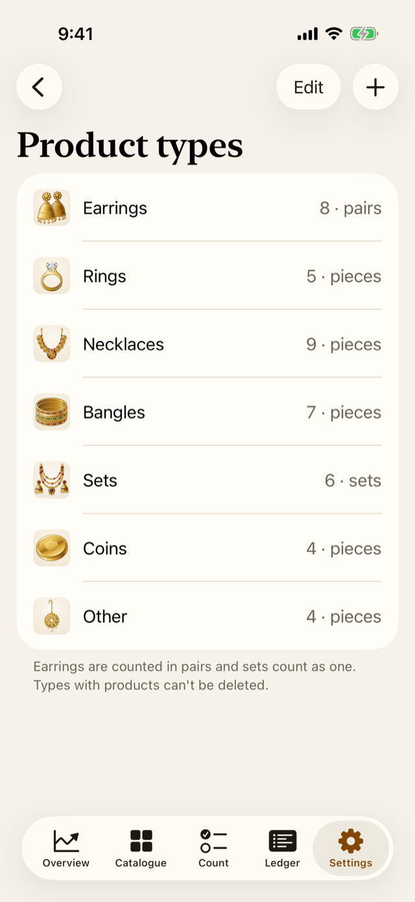
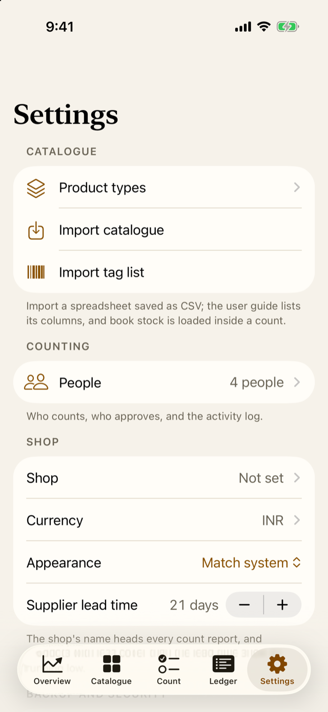
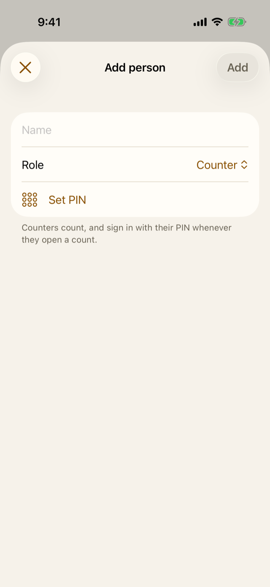
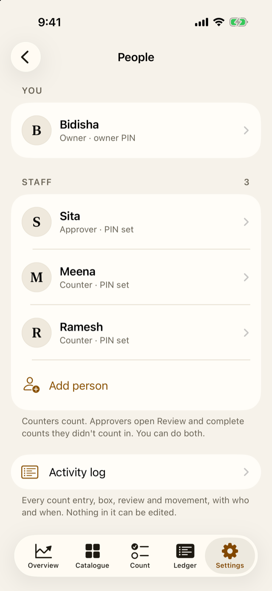
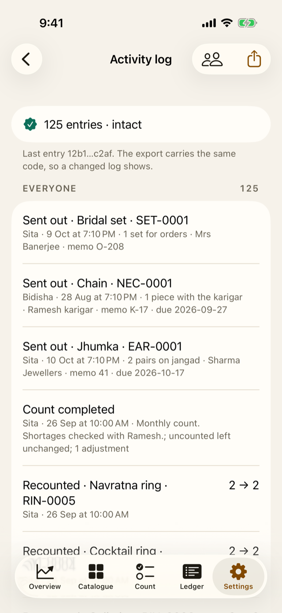

8 Setting up the shop
For the owner
- What to set up before the first count, and in what order.
- How people, roles and PINs work, and why counting and approving are kept apart.
- How Jholok keeps the shop’s stock and costs private.
8.1 The idea
Jholok works on its own from the first launch: it already knows the usual types of jewellery and how each is counted. A few minutes of setting up makes it fit your shop:
- Product types: check that the types match how your shop groups its stock.
- Products: add them one by one, or import a spreadsheet (Chapter 9).
- Shop details: your shop’s name and address, printed on count reports.
- People (optional): who counts and who approves, each with their own PIN. If you count alone, you can skip it.
- The lock: on by default, so the app stays private. It starts once you add your first product or start a count.
Until all of this is done, a getting-started card on the Overview walks you through the first three steps, one at a time (Chapter 11).
Where things are in Settings
Settings has five groups:
- Catalogue: Product types, Import catalogue and Import tag list.
- Counting: People.
- Shop: your shop’s details, Currency, Appearance and Supplier lead time.
- Backup and security: Backup, the Require Face ID switch, and how soon the app locks.
- More: Advanced (the exports, Photo counting, Book stock words and Diagnostics), User guide, which opens this guide, and the app’s Version.
TipIf you count alone
Skip People. Until it’s set up, you count, review and complete each count yourself, with Face ID or the passcode, and every count says “Counted and approved by: The owner (People not set up)”. Set People up when staff start counting (Section 6.2.5).
Owner, approvers and counters
Everyone who uses Jholok has a role:
- The owner runs the shop in Jholok. There is one owner, who sets up the people and proves it’s them for exports and backups.
- An approver opens a count’s Review and completes it, but only for a count they didn’t count in. Approvers can count too.
- A counter counts, and submits the count for review.
This is the separation of duties from Chapter 5: one person counts, another checks. The owner may approve a count they counted in only when nobody else can, and the count then says so: “Counted and approved by Bidisha (one person)”.
Each counter and approver has a PIN of 4 to 6 digits. It shows who entered each figure, and an approver’s PIN is their signature on a completed count.
All of this applies once People is set up. If you count alone, you don’t need it: you count, review and complete the count yourself (Section 6.2.5).
8.2 In the app
Product types
Open Settings, then Product types, under Catalogue. Each type shows how many products it has and the unit it’s counted in.
- Tap + to add a type. Give it a name, choose what it’s counted in (pieces, pairs or sets), and pick a symbol.
- Tap a type to rename it or change its unit. Changing the unit doesn’t convert existing stock: 4 pieces become 4 pairs. So choose the unit before adding products.
- Tap Edit to drag the types into the order you like.
- A type that has products can’t be deleted.
Shop details
In Settings, under Shop:
- Shop: your shop’s name and address. They head every count report. Add your GSTIN after the address if your accountant wants it on the reports.
- Currency and Appearance (light, dark, or the phone’s setting).
- Supplier lead time: how many days a reorder takes to arrive, 21 by default. A product whose stock won’t last that long at its recent pace of sales shows as running low (Chapter 11).

People
Open Settings, then People, under Counting. People is optional. Until you set it up, Jholok asks nobody who’s counting, and you count, open Review and complete the count yourself, with Face ID or the phone’s passcode. The count then says “Counted and approved by: The owner (People not set up)”. That suits a shop where one person counts: Section 6.2.5 shows that path. Set People up when more than one person counts, so that counting and approving are kept apart.
On the getting-started card, the last step is Add the people who count: tap Set up People, or I count alone to skip it.
- Enter your name and tap Set up People. On a phone with Face ID, Face ID proves it’s you; an owner PIN is optional, as a second way in. On a phone without Face ID, set an owner PIN.
- Tap Add person for each member of staff. Enter their name, choose Counter or Approver, and let them choose their own PIN.


A PIN must be 4 to 6 digits. Jholok refuses easy ones: one digit repeated (1111), a run (1234) and the most common PINs. After 5 wrong tries in a row, the person waits a minute before trying again, and longer after each further 5 wrong tries.
To change someone’s role or reset their PIN, tap their name. When someone leaves, Archive them: they can no longer sign in, and the log keeps their name. Nobody is ever deleted, so the history stays complete.
The activity log
At the bottom of People, Activity log lists everything that happened: every count entry, box, review, completion and movement, and every change to People, each with who and when. Nothing in it can be edited or removed.

The lock
In Settings, under Backup and security, Require Face ID is on from the start. Jholok asks for Face ID, or the phone’s passcode, when it opens and when you come back after a minute away. You can choose how soon it locks, in Lock: immediately, or after 1, 5 or 15 minutes. Whenever the app isn’t in front, a plain cover hides it from the phone’s list of open apps.
While Jholok is empty, it doesn’t lock: there is nothing to protect yet. It starts locking the next time it opens after you add your first product or start your first count, and the footer under the switch says so until then. The first time it locks, it explains why: “Jholok locks to keep your stock private.” Tap Unlock to go on. After that, it asks straight away.
Turning the lock off asks the owner to prove it’s them.
8.3 Why it works this way
- Two people, not one. Roles make sure the person who counts isn’t the person who accepts a loss.
- Once People is set up, the owner proves it’s them with Face ID or the owner PIN, not the phone’s passcode (except to reset a forgotten owner PIN). On a phone shared in the shop, staff may know the passcode. Everything that takes data off the phone (exports, backups, box photos) and every change to People asks the owner each time.
- Nobody is deleted, and the log can’t be edited. A shop’s records are only worth something if they can’t be quietly changed later.
- The lock is on by default, because costs and stock are private, and a phone left on the counter shouldn’t show them.
8.4 How it works
NoteRead how it works
PINs are never stored as typed: Jholok keeps them in a scrambled form that can’t be turned back into the PIN. Each log entry carries a code made from its own details and the code of the entry before it, so the entries form a chain. If anyone changed or removed an entry in the phone’s files, the chain would break, and the log would say so: “The log was changed after entry 12”, instead of “intact”.
If the owner forgets their PIN on a phone without Face ID, it can be reset with the phone’s passcode. The log records that, and the next count’s result says so, so a reset can’t go unnoticed.
8.5 Try it
The demo shop has four people:
| Name | Role |
|---|---|
| Bidisha | Owner |
| Sita | Approver |
| Ramesh | Counter |
| Meena | Counter |
This is who may do what:
| What | Counter | Approver | Owner |
|---|---|---|---|
| Count, and submit a count | Yes | Yes | Yes |
| Open Review and complete a count | No | Yes, if they didn't count in it | Yes; if they counted in it, only when no other approver can |
| Reopen a submitted count | No | Yes, if they didn't count in it | Yes; if they counted in it, only when no other approver can |
| Load the books into a count | No | Yes | Yes |
| Send stock out, and sign it back in | No | Yes | Yes |
| Mark a tag sold from the books | No | No | Yes |
| Change People, export, back up | No | No | Yes |
Question. Ramesh and Sita counted the strongroom together. Who can approve the count?
TipAnswer
Not Ramesh, who is a counter. Not Sita either: she is an approver, but she counted in this count. Bidisha, the owner, didn’t count, so she can approve it. If Bidisha had counted too, she could still approve, because no other approver is left, and the count would say “one person”.
- Check the product types first: a type’s unit can’t convert stock later.
- If more than one person counts, set up People before the first real count: the owner, then each counter and approver with their own PIN. If you count alone, you can skip it.
- Counting and approving are kept apart. The owner approves alone only when nobody else can.
- The lock is on from the start and begins with the first product or count. Only the owner can take data off the phone.